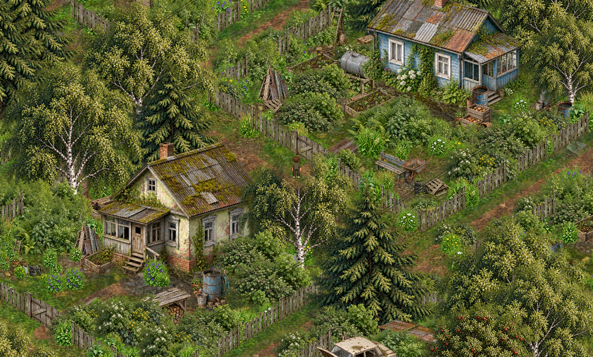
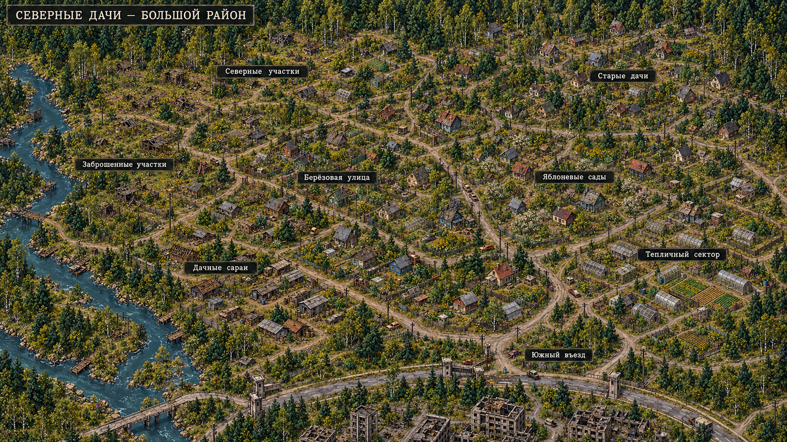
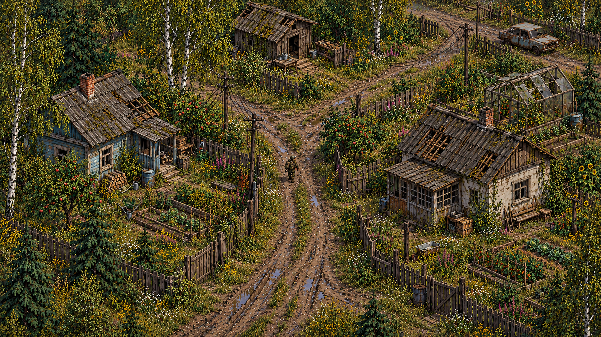
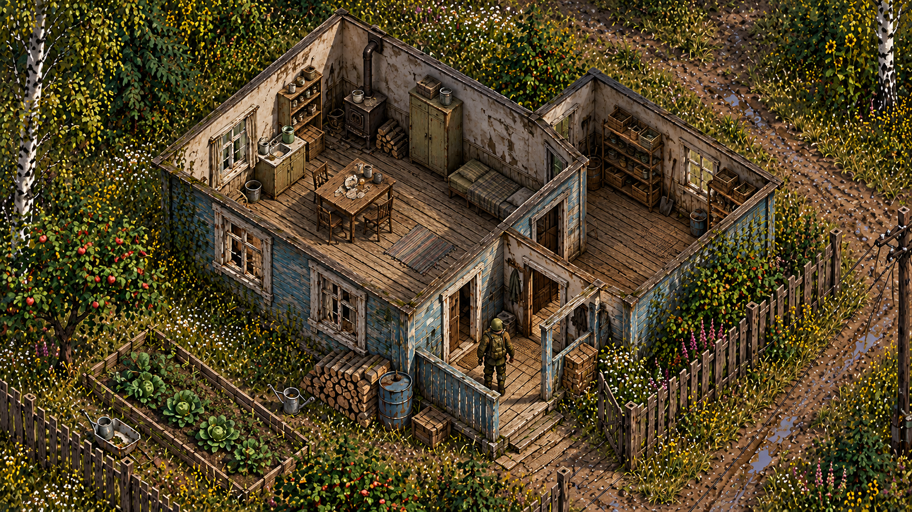
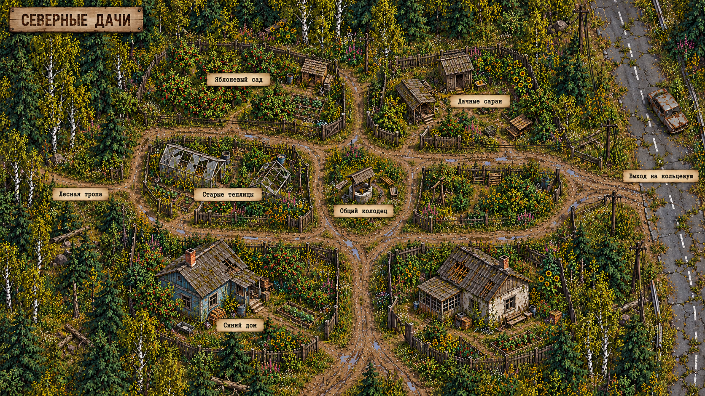
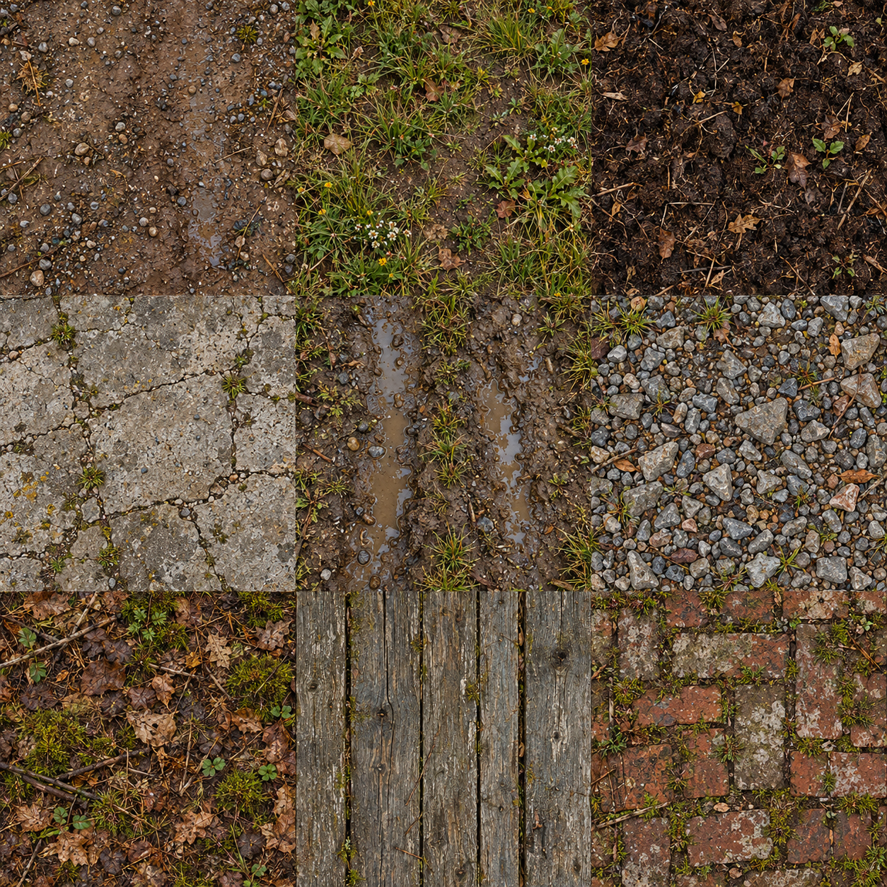
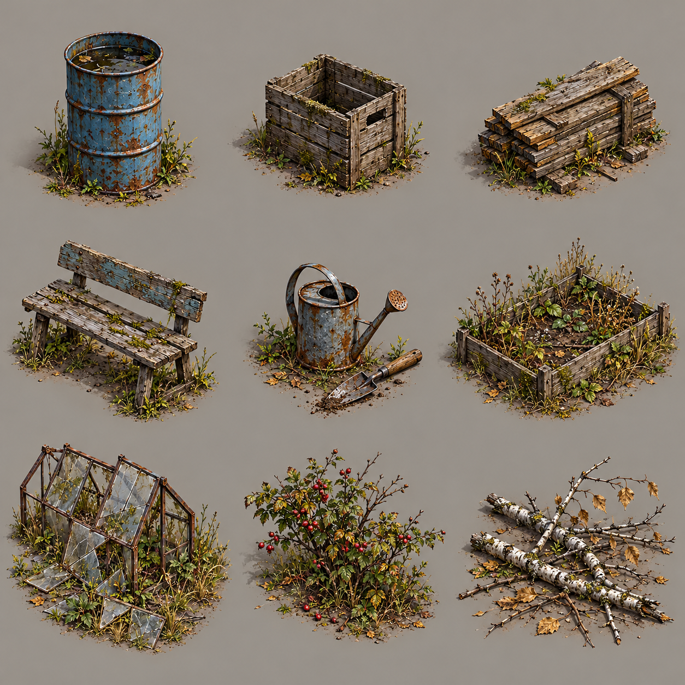

Северные дачи
Версия 0.5.0: восемь секторов, новые цвета и плотное окружение →

Фактический кадр из игры 0.5.0 · Северные участкиОткрыть текстуры всего района: 122 PNG, фильтр по 8 секторам →
Первая локация для карты «Кольцо вокруг города». Дачные проезды, выцветшие деревянные дома, старые теплицы и берёзовый лес. Подготовлены 122 рабочих PNG для всего района, а также референсы и планы. Полный район — большой дачный массив; прежний план показывает только один квартал.
Набор графики и референсов. Подключён к карте района; материалы земли требуют проверки стыков, а здания — подготовки отдельных крыш, дверей и коллизий.
42 новых варианта деталей и неподвижное солнце →
Полный район — расширенный план

Северные дачи — большой район
8 секторов. Проектный ориентир: около 80 участков и 60 дач, примерно вдвое больше района на общей карте по площади. Числа не являются подсчётом объектов на изображении.Отдельный квартал и интерьер

Дачный проезд — основной вид
Референс для сборки локации
Интерьер дачного дома
Референс для сборки локации
Старый квартал — фрагмент большого района
Референс для сборки локацииОтдельные объекты на прозрачном фоне
 Дачный дом
Дачный дом
world/house · стилевой вариант Дачный сарай
Дачный сарай
world/garage · стилевой вариант Секция деревянного забора
Секция деревянного забора
world/fence_wood · стилевой вариант Берёза
Берёза
world/tree_deciduous · стилевой вариантМатериалы и декор

Материалы земли — 9 образцов
Исходный лист, требует подготовки для игры
Дачный декор — 9 образцов
Исходный лист, требует подготовки для игрыСостав набора · План и оставшиеся этапы интеграции · Промпты